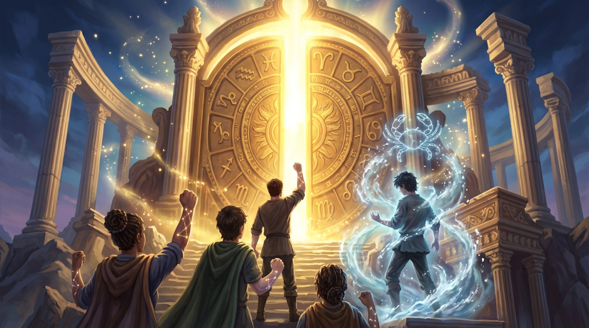
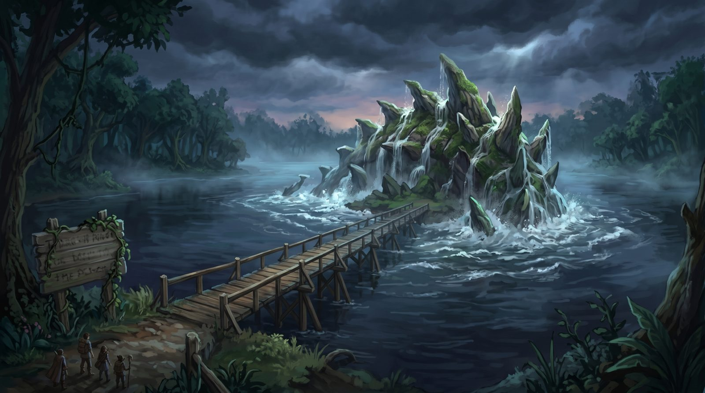
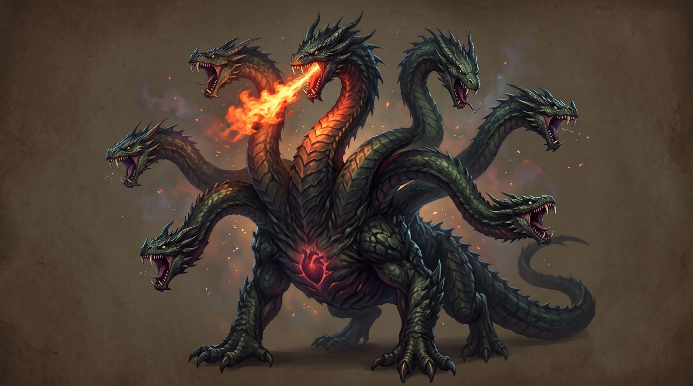
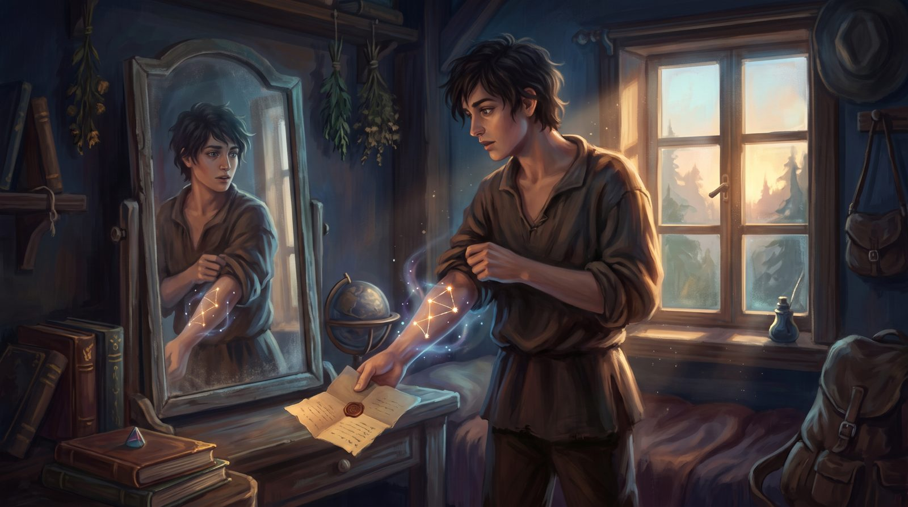
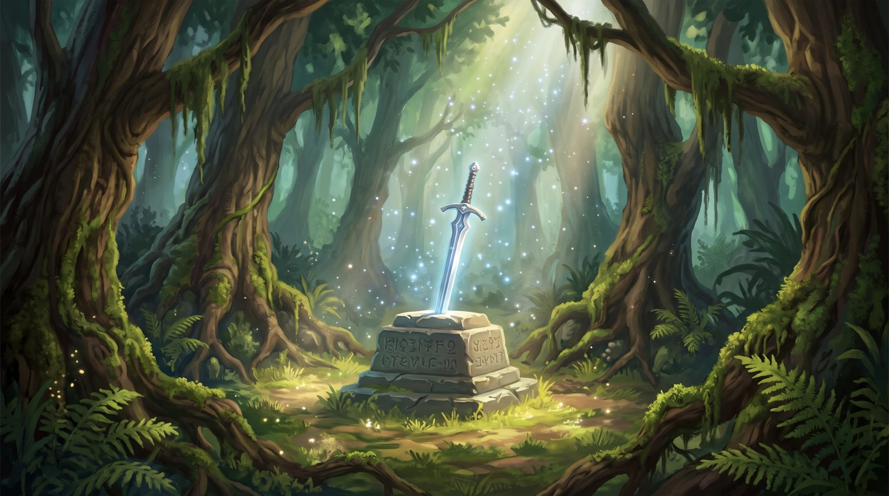

Torneio das Lendas
Um RPG de mesa criado pela Milena · Parte 1: a jornada até o Olimpo
Três jogadores acordam com a constelação do seu signo brilhando no braço e uma voz na cabeça: "protejam o humano e encontrem Câncer". Para passar pelos portões do Olimpo, eles precisam completar uma lista mágica, enfrentando criaturas de lendas do mundo inteiro. Até hoje, nenhum representante dos signos ganhou o torneio.
Jogue a fase do Boitatá
Um jogo de plataforma com RPG: atravesse a floresta incendiada, derrote as brasas, suba de nível escolhendo seus atributos e apague o fogo do Boitatá com a água. Funciona no celular (deitado) e no computador.
▶ Jogar agoraNo celular, dá para "Adicionar à tela inicial" e abrir como app.
Explore

A aventura
As 13 cenas da jornada, do despertar até o Olimpo.

Bestiário
As 10 criaturas: história, ataques, status e como derrotar.

Signos e elementos
Fogo, Terra, Ar e Água, e as constelações dos jogadores.
.jpeg)
Caderno original
As 36 páginas escritas à mão, do jeito que nasceram.
.jpeg)
Transcrição
O caderno inteiro digitado, página por página.

Sugestões
Ideias para fechar furos, completar regras e continuar a história.
Como está o projeto
Parte 1 escritaJogo: fase do Boitatá (protótipo)Parte 2: o torneio (a escrever)13 locais ilustrados5 de 10 criaturas ilustradas
Ainda faltam: as fichas do Grifo, do Kallikántzaros e da Hidra, a cena do museu, a luta do pesadelo e as regras de dano.
A aventura
A parte 1, cena por cena, com as palavras do caderno. Clique numa imagem para ampliar.
Bestiário
As criaturas na ordem dos combates. Status: V Vigor · P Presença · A Agilidade · F Força · I Intelecto.
Signos e elementos
Como o caderno divide os signos (página 1). No mundo da Milena, os elementos não seguem a astrologia comum.
| Elemento | Signos | Como são |
|---|---|---|
| 🔥 Fogo | Escorpião, Libra, Sagitário | São orgulhosos, adoram uma briga principalmente quando ganham, não são dos mais inteligentes, pensam depois que agem. |
| 🌿 Terra | Touro, | Adoram a natureza e odeiam quando alguém fala mal dela, na maioria são calmos e veganos. |
| 🌪️ Ar | Gêmeos, Virgem, Câncer | Costumam ser inteligentes e bem alegres, adoram uma piada e não gostam muito de lutar, apenas quando é necessário. |
| 🌊 Água | Áries, Peixes, Aquário | São sérios, não costumam arrumar encrenca mas também têm pavio curto; se algo dá errado, eles perdem o controle. São os mais inteligentes de todos os elementos. |
Em negrito, os signos circulados no caderno. O Leão está riscado e ainda não tem elemento.
As constelações dos jogadores
Quando cada jogador levanta a manga diante do espelho, vê a constelação do seu signo no braço. Menos o jogador de Câncer: a dele não aparece.
.jpeg)
Página 4 do caderno
O despertar diante do espelho
Criação de personagem
| Obrigatório | Opcional |
|---|---|
| Nome, idade aproximada, poder, aparência. De 3 a 4 ataques diferentes, com pelo menos 1 do seu elemento. | Como usar os itens e poderes; quais serão os poderes e os itens; backstory (não será relevante). |
Cada jogador pode ter no máximo 2 itens, e um deles deve ser de ataque (página 34).
Caderno original
As 36 páginas fotografadas, na ordem em que foram escritas. Clique para ampliar e use as setas para virar as páginas.
Transcrição
O caderno digitado na íntegra, com a escrita original. Riscado = o que a Milena riscou; [?] = leitura incerta.
Carregando…
Sugestões
Ideias para olhar juntos. A história é da Milena: tudo aqui é opcional.
Carregando…